set.seed(2023)
library(data.table)
library(ggplot2)
library(dplyr)
library(tidyr)
library(rpart)
library(rpart.plot)
library(caret)
library(ranger)
library(reticulate)Tp noté - Apprentissage supervisé 2A
R
Apprentissage supervisé
Ensai2A
Random forest
CART
UMAP
Partie 1 - Chargement du jeu de données, analyse exploratoire
Le jeu de données comprend des mesures effectuées 1599 vins. Ainsi, pour chaque vin, il a été mesuré 12 caractéristiques à savoir :
- L’acidité fixe (
fixed.acidity) - L’acidité volatile (
volatile.acidity) - L’acide citrique (
citric.acid) - Le sucre résiduel (
residual.sugar) - Le chlorure (
chlorides) - Le dioxyde de soufre libre(
free.sulfur.dioxide) - Le dioxyde de soufre total(
total.sulfur.dioxide) - La densité(
density) - Le pH allant de 0 à 14 (plus le pH est bas, plus le vin est acide)
- Le sulfate (
sulphates) - L’alcool (
alcohol) - La note sur la qualité du vin (
quality).
Il s’agira à la fin de ce TP de prédire une note pour chaque vin, reflétant sa qualité.
#chargement des données
wine_quality<-fread("Donnees_qualite_vins.csv")
names(wine_quality)<-make.names(names(wine_quality))1. Analyse descriptive univariée des variables
Avant toute analyse descriptive de nos variables, il est important de vérifier que nos données ne contiennent aucune valeur manquante.
colSums(is.na(wine_quality)) fixed.acidity volatile.acidity citric.acid
0 0 0
residual.sugar chlorides free.sulfur.dioxide
0 0 0
total.sulfur.dioxide density pH
0 0 0
sulphates alcohol quality
0 0 0 Nous constatons que nos données ne contiennent aucune valeur manquante. Cette constatation est prometteuse car elle signifie que nos données sont complètes, ce qui est essentiel pour la construction d’un modèle de régression fiable.
1.1 Qualité du vin (quality)
La variable quality constitue ici notre variable d’intérêt pour la régression à effectuer. Cette variable est discrète et prend des valeurs entières entre 3 (pour un vin de mauvaise qualité) et 8 (pour un vin de meilleur qualité).
En moyenne, les vins ont une note de \(5,636\). De fait, nous constatons qu’au moins 50% des vins ont une note supérieur à la moyenne.
ggplot(wine_quality,aes(x=quality))+
geom_bar()+
theme_bw()+
labs(title ="Répartition de la qualité des vins",x="qualité des vins", y="nombre de vins")+theme(aspect.ratio = 1.5)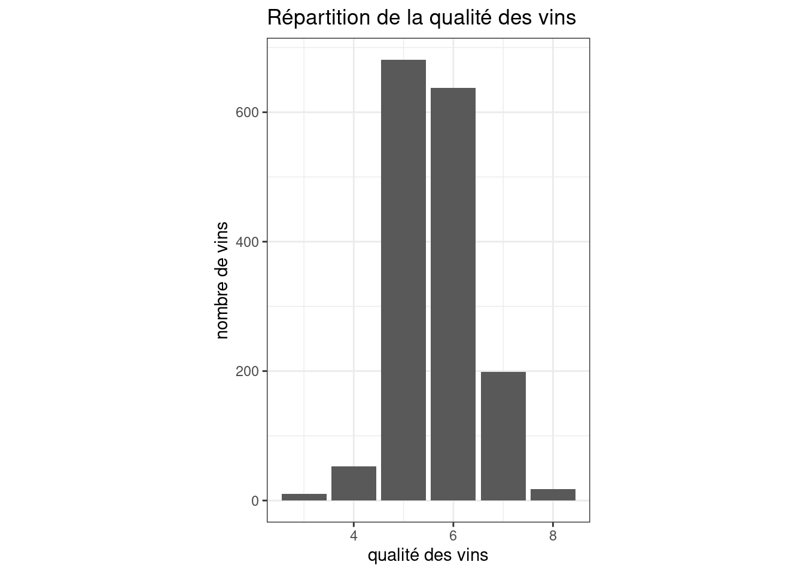
round(prop.table(table(wine_quality$quality)),2)
3 4 5 6 7 8
0.01 0.03 0.43 0.40 0.12 0.01 Par ailleurs,la majorité de nos vins obtient une note de 5 (43% des vins) ou 6 (40% des vins).
Nous pourrons considérer cette variable comme étant catégorielle étant donnée le faible nombre de valeurs qu’elle prend. Le problème posé ici peut être donc vu comme un problème de classification tout comme un problème de régression.
1.2 Acidité fixe (fixed.acidity)
L’acidité fixe dans un vin correspond à la quantité d’acides fixes présents naturellement dans le vin. L’ensemble des vins de notre jeu de données présentent une acidité fixe moyenne de \(8,32\). Cependant, il est intéressant de noter que la médiane de l’acidité fixe se situe à 7,90, ce qui indique qu’un peu plus de la moitié des vins sont plus acides que d’autres.
ggplot(wine_quality,aes(y=fixed.acidity))+
geom_boxplot()+
theme_bw()+
labs(title ="Niveau d'acidité fixe des vins")+
theme(aspect.ratio = 1)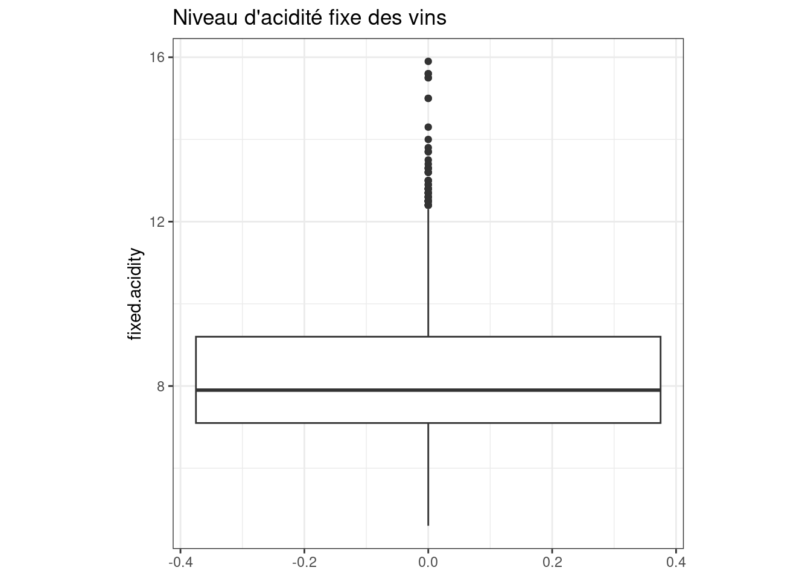
De plus, l’acidité fixe des vins est compris entre \(4,60\) à \(15,90\) avec une dispersion de \(\sigma^2=3.03\). Cette variation signifie que certains vins affichent une acidité plus élevée que d’autres, ce qui contribue à une grande diversité au sein de l’échantillon.
1.3 Acidité Volatile (volatile.acidity)
L’acidité volatile dans un vin correspond à la quantité d’acides volatils qu’il contient, c’est à dire des acides qui sont capables de s’évaporer après la vinification.
Dans notre jeu de données, nous constatons que l’acidité volatile s’étend de 0,1200 à 1,5800, avec une moyenne d’environ 0.5278. Ainsi, certains vins présentent une acidité volatile plus élevée que d’autres.
ggplot(wine_quality,aes(y=volatile.acidity))+
geom_boxplot()+
theme_bw()+
labs(title ="Niveau d'acidité volatile des vins")+
theme(aspect.ratio = 1)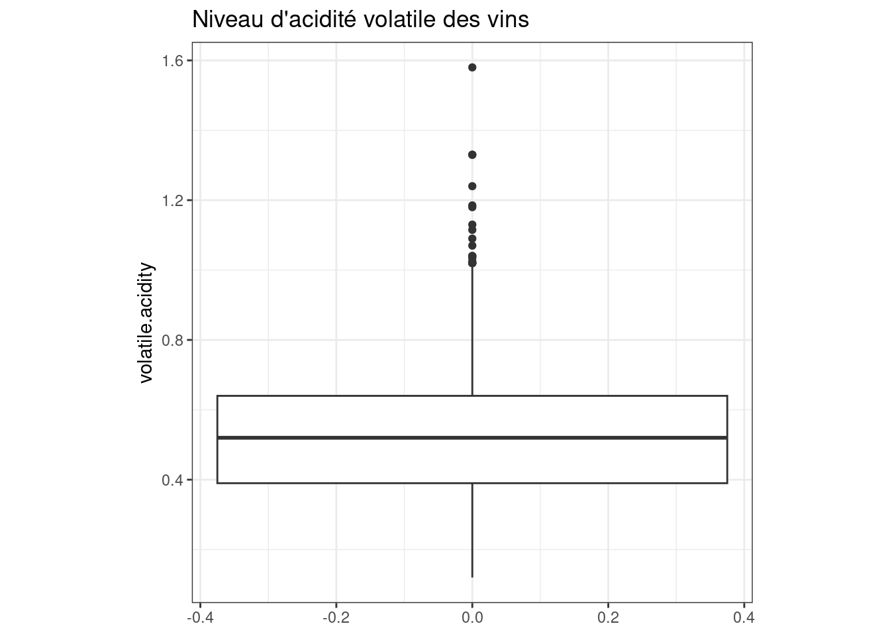
1.4 Acide Citrique (citric.acid)
La teneur en acide citrique varie de 0 à 1, avec une moyenne d’environ 0,271. Tout comme l’aciditité fixe, 50% des vins ont un niveau d’acide citrique inférieur à la moyenne.
summary(wine_quality$citric.acid) Min. 1st Qu. Median Mean 3rd Qu. Max.
0.000 0.090 0.260 0.271 0.420 1.000 On observe également une certaine variabilité des teneurs en acide citrique dans cet échantillon. En effet, le premier quart des observations a une acidité inférieure à 0.09 , tandis que le dernier quart a une acidité supérieure à 0.42. De fait, certains vins sont quasi dépourvus en acide citrique tandis que d’autres sont riches en cet acide.
1.5 Sucre Résiduel (residual.sugar)
Le sucre résiduel fait référence à la quantité de sucre restant dans un vin après la fermentation alcoolique.
summary(wine_quality$residual.sugar) Min. 1st Qu. Median Mean 3rd Qu. Max.
0.900 1.900 2.200 2.539 2.600 15.500 On constate une certaine variabilité des teneurs en sucre résiduel de nos vins. En effet, le premier quartile à 1,9 montre que 25% des vins ont un sucre résiduel inférieur à cette valeur. A l’opposé, 25% dépassent 2,6 d’après le troisième quartile.
Bien que la majorité se concentre autour de la moyenne aux alentours de 2-3 , certains vins sont très faiblement dotés en sucre résiduel (minimum de 0,9) tandis que d’autres en contiennent des doses importantes, pouvant aller jusqu’à 15,5 (max).
1.6 Chlores (chlorides)
Le chlore (chloride) est un élément chimique présent naturellement dans le vin. Il s’agit de l’ion chlorure \(Cl-\).
summary(wine_quality$chlorides) Min. 1st Qu. Median Mean 3rd Qu. Max.
0.01200 0.07000 0.07900 0.08747 0.09000 0.61100 Dans notre jeu de données, nous constatons que 25% des vins ont une teneur inférieure à 0.07 L. De plus, la moitié des vins ont moins de 0,079 de teneur en chlore, soit moins de la moyenne qui est de 0,08.
La majorité des vins(50%) ont une concentration en chlorure située entre 0,07 et 0,09 g/L, avec quelques valeurs extrêmes plus faibles et plus élevées.
1.7 Dioxyde de Soufre Libre (free.sulfur.dioxide)
Le dioxyde de soufre libre (SO2 libre) est une forme de dioxyde de soufre (SO2) que l’on trouve naturellement ou que l’on ajoute au vin. C’est la forme active du dioxyde de soufre dans le vin, essentielle pour sa conservation.
ggplot(wine_quality,aes(x=free.sulfur.dioxide))+
geom_histogram(bins=30)+
theme_bw()+
labs(title ="Teneur en dioxide de soufre libre")+
theme(aspect.ratio = 1)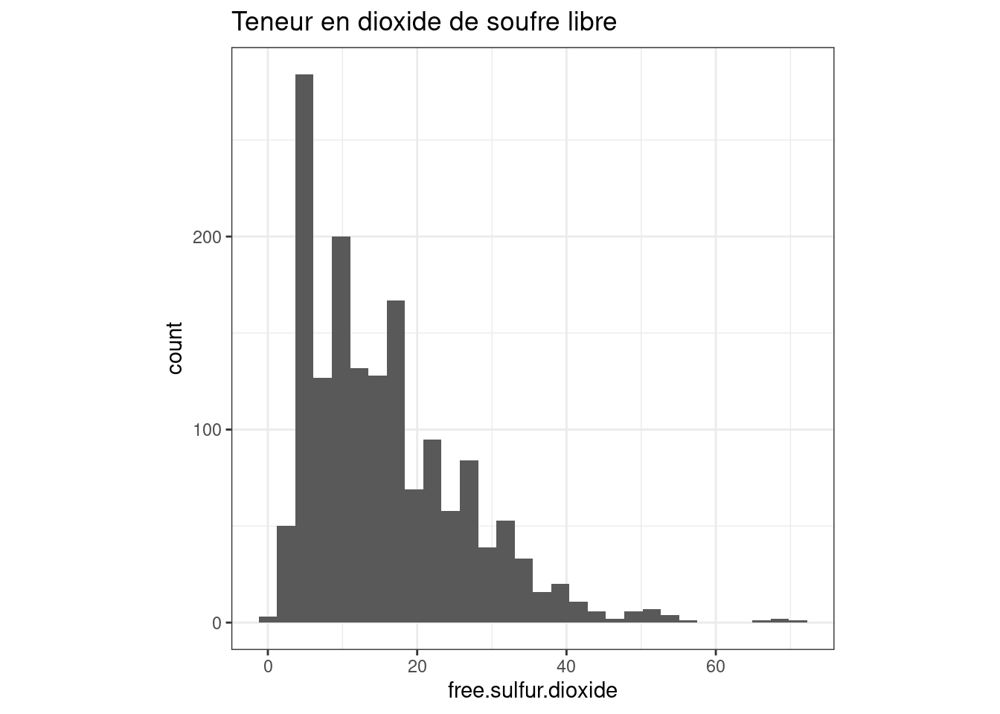
On constate une variabilité importante des teneurs en dioxyde de soufre libre dans nos vins. Le premier quartile à 1 indique que 25% des vins ont une très faible teneur en dioxyde de soufre, (inférieure à 1) tandis que le troisième quartile à 21 révèle que 25% des vins ont une concentration supérieure à 21 en dioxyde de soufre libre. De fait, certains vins possèdent une teneur très élevée en ce dioxyde.
1.8 Dioxyde de Soufre Total (total.sulfur.dioxide)
Le dioxyde de soufre total (SO2 total) est l’autre forme de dioxyde de soufre dans le vin. Il est un composé chimique utilisé couramment comme additif dans le processus de vinification.
summary(wine_quality$total.sulfur.dioxide) Min. 1st Qu. Median Mean 3rd Qu. Max.
6.00 22.00 38.00 46.47 62.00 289.00 Il y a une grande variabilité des teneurs en dioxyde de soufres totaux pour les vins de cet échantillon. En moyenne, les vins de notre échantillon ont une teneur de 46,47 ce qui est supérieur à la médiane qui s’élève à 38.
1.9 Densité (density)
La densité du vin est généralement mesurée en gramme par centimètre cube (g/cm³).
summary(wine_quality$density) Min. 1st Qu. Median Mean 3rd Qu. Max.
0.9901 0.9956 0.9968 0.9967 0.9978 1.0037 La valeur minimale de 0.9901 indique la présence de vins avec une densité très faible. Le premier quartile à 0.9956 montre que 25% des vins ont une densité inférieure à ce seuil. La médiane à 0.9968 signifie que la moitié des observations sont en dessous de cette valeur. Le troisième quartile à 0.9978 révèle que 25% des vins ont une densité qui dépasse 0.9978. Enfin, la valeur maximale atteint 1.0037, démontrant l’existence de vins avec des densités très élevées.
1.10 pH
On remarque d’emblée que les vins de cet échantillon présentent des pH relativement homogènes et resserrés. En effet, 50% des observations (l’intervalle entre le 1er et le 3e quartile) sont comprises entre 3,21 et 3,4. De plus, la moyenne de 3,311 et la médiane à 3,31 indiquent une distribution centrée.
ggplot(wine_quality,aes(x=pH))+
geom_histogram(bins = 30)+
theme_bw()+
labs(title ="Répartition du pH des vins",x="pH")+
theme(aspect.ratio = 1)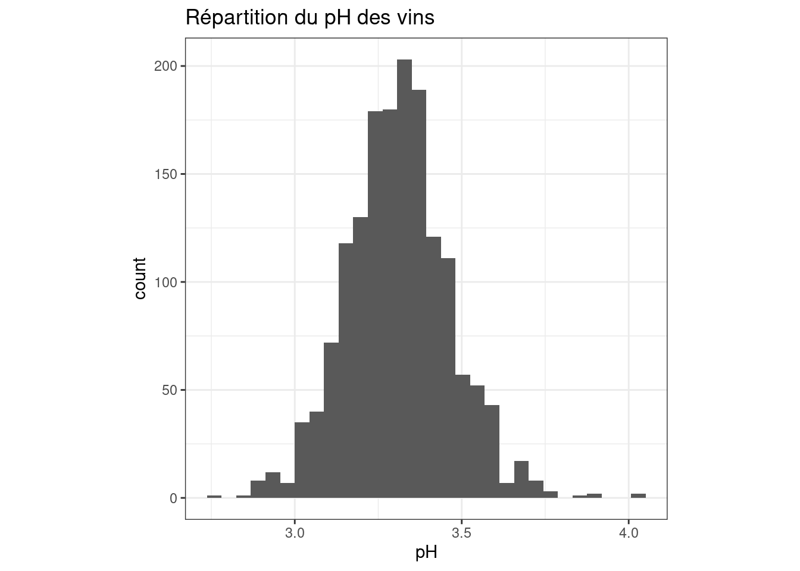
Cette faible dispersion des pH autour de la moyenne suggère une certaine cohérence des vins analysés en termes d’acidité. Quelques vins se démarquent avec un pH plus acide (minimum) ou plus basique (maximum), mais l’essentiel des échantillons affiche un pH entre 3,2 et 3,4.
1.11 Sulfates (sulphates)
Les sulfates, ou plus spécifiquement le dioxyde de soufre (SO2), sont couramment utilisés dans l’industrie vinicole comme additif.
ggplot(wine_quality,aes(x=sulphates))+
geom_histogram(bins = 30)+
theme_bw()+
labs(title ="Répartition du niveau de sulfate des vins")+
theme(aspect.ratio = 1.5)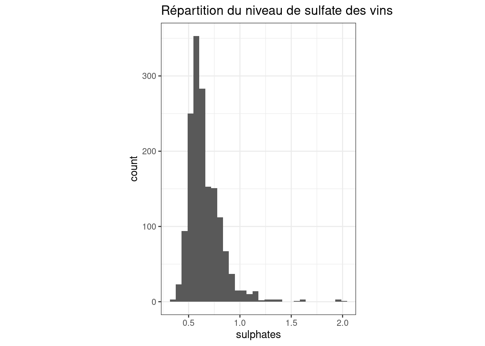
On observe pour les sulfates une distribution plus dispersée que pour le pH précédemment étudié. Bien que l’intervalle interquartile soit resserré entre 0.55 et 0.73, on observe une valeur minimal de sulphates de 0.33 à 2.00 au maximum.
Cette amplitude plus large induit une moyenne de 0.6581 plus éloignée de la médiane à 0.62. Cette variabilité plus marquée des sulfates pourrait supposer que les vins analysés présentent des concentrations diverses en cet élément. Si la majorité affiche une teneur groupée entre 0.55 et 0.73, certains vins s’en distinguent avec des sulfates très faibles ou au contraire particulièrement élevés.
1.12 Alcool (alcohol)
La teneur en alcool est l’une des caractéristiques les plus importantes du vin.
On constate que la concentration en alcool présente une distribution relativement étalée au sein de l’échantillon. La moyenne de 10.42, légèrement supérieure à la médiane de 10.2, confirme une asymétrie positive de la distribution. De fait, certains vins se démarquent donc avec des degrés d’alcool marqués, au-delà de 14°, quand d’autres restent sur une teneur plus modérée.
ggplot(wine_quality,aes(x=alcohol))+
geom_density() +
geom_histogram(bins = 30)+
theme_bw()+
labs(title ="Concentration en alcool")+
theme(aspect.ratio = 1.5)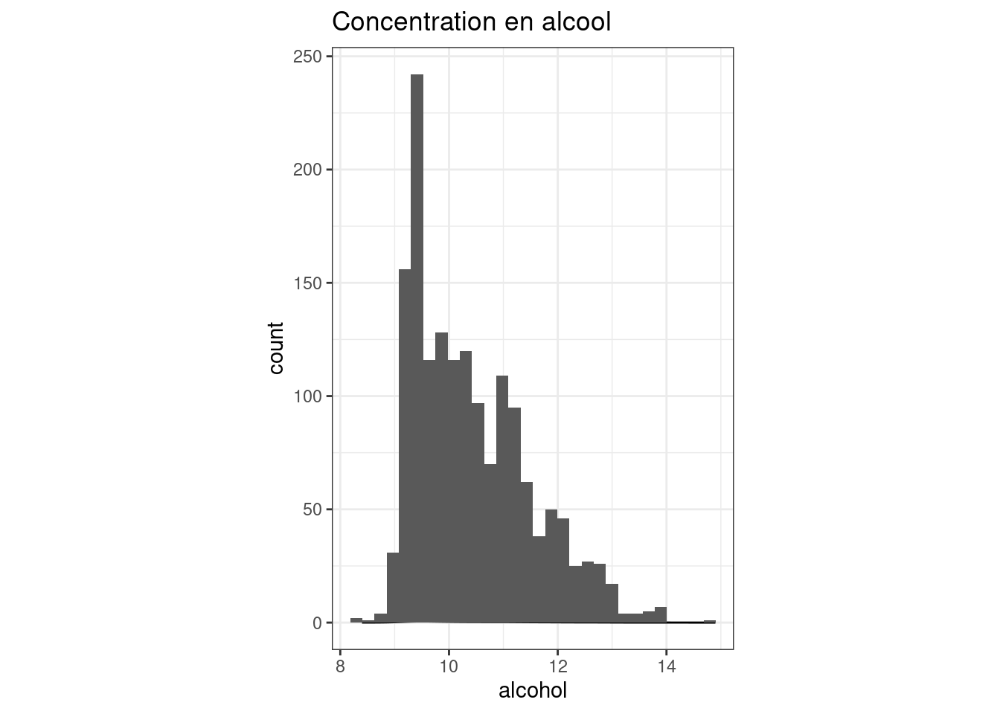
2. Analyse visuelle bivariée entre les variables
2.1 Les relations entre les variables explicatives :
L’analyse graphique des relations entre les variables explicatives montre que la majorité des couples de variables ne présentent pas de relation linéaire visible. Cependant, quelques exceptions apparaissent avec des corrélations linéaires visuelles notables :
Une relation positive entre fixed.acidity (acidité fixe) et citric.acid (acidité citrique) : quand l’acidité fixe augmente, l’acidité citrique a tendance à augmenter aussi.
Une relation linéaire positive également entre fixed.acidity et density (densité) : plus l’acidité fixe est élevée, plus la densité du vin a tendance à être importante.
A l’inverse, une relation linéaire négative semble se dégager entre fixed.acidity et le pH des vins : le pH diminue lorsque l’acidité fixe croît.
pairs(wine_quality[,-12], pch = ".",upper.panel = NULL,
main="Visualisation des relations entre les variables explicatives")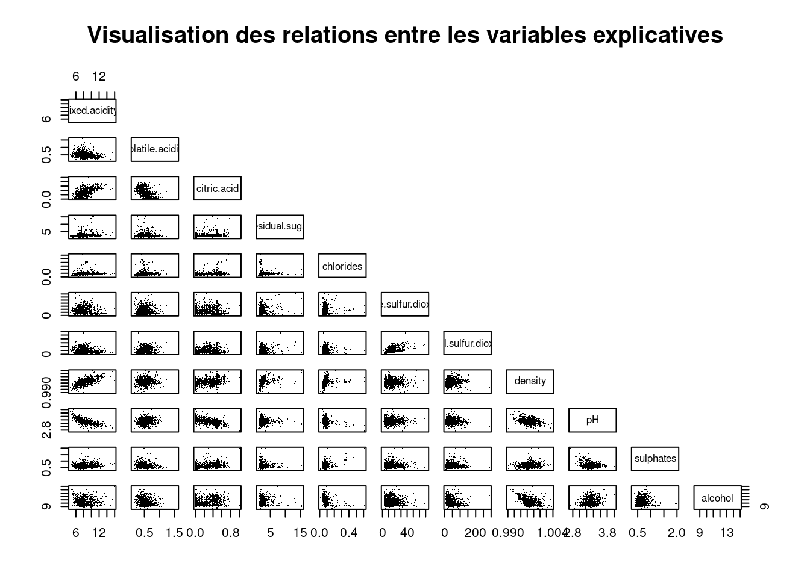
Cette analyse graphique préliminaire met en évidence quelques relations linéaires visuelles intéressantes entre certains couples de variables explicatives. Des analyses complémentaires comme des tests devraient être effectuées afin de confirmer et quantifier précisément ces relations.
2.2 Les variables qui influent sur la qualité du vin
Puisque la variable à prédire (la note du vin) est discrète avec de une étendue de valeurs prises basse, il est pertinent de la considérer comme une variable catégorielle pour l’analyse graphique. L’objectif étant d’évaluer visuellement l’influence des variables explicatives sur cette note qualitative, la représentation adaptée n’est pas un nuage de points.
En effet, un nuage de points convient pour analyser des relations continues entre variables quantitatives continues. La visualisation la plus appropriée consistera donc à représenter la distribution de chaque variable explicative en fonction des classes de la variable à prédire, à savoir les différentes notes de qualité des vins.
On utilisera pour cela des boîtes à moustaches (boxplots) pour chaque variable explicative, en utilisant les note de qualité comme modalité.
wine_quality %>%
mutate(quality = as.factor(quality)) %>%
melt(id_vars='quality') %>%
ggplot(mapping=aes(x=quality, y=value)) +
geom_boxplot(outlier.size = 0.5)+
facet_wrap(~variable, scales="free") +
labs(title='Boxplot selon la qualité des vins')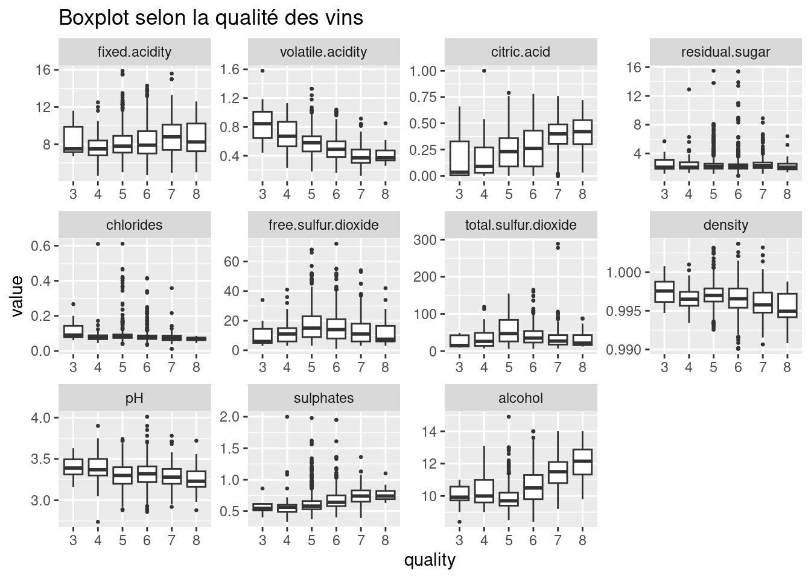
L’analyse visuelle préliminaire semble mettre en évidence plusieurs variables potentiellement prédictives de la note de qualité des vins :
La teneur en acide volatile (volatile.acidity) semble négativement corrélée aux bonnes notes de qualité de vins.
L’acidité citrique (citric.acid) est quant à elle positivement corrélée à la note.
Le degré d’alcool (alcohol) semble être positivement lié à la note de qualité.
La densité (density) semble elle aussi négativement corrélée à la qualité du vin.
Enfin, la concentration en sulfates (sulphates) est positivement corrélée à la note de qualité.
Bien que nécessitant confirmation, ces relations visuelles fournissent de premières pistes intéressantes sur les facteurs qui influent potentiellement la qualité du vin. Par la suite, nous allons effectuer un modèle d’arbre cart de régression. Cela nous permettra d’avoir un indicateur sur les variables qui influent bel et bien sur la qualité du vin.
Partie 2 : Construction des échantillons, entraînement des modèles
1. Construction des échantillons
Comme observé au 1.1, les notes de qualité des vins dans notre jeu de données présentent une distribution déséquilibrée, avec une forte majorité de vins ayant une note entre 5 et 6. Afin d’obtenir des échantillons représentatifs pour l’entraînement et les tests, nous devons stratifier les données en fonction de cette variable cible.
Nous allons ainsi constituer nos jeux de données de sorte à conserver la même proportion des différentes notes de qualité dans l’échantillon d’apprentissage et de test avec la fonction createDataPartition de la library caret. Cette stratification selon la variable cible permettra d’obtenir des échantillons représentatifs.
Pour le découpage, nous avons arbitrairement choisi d’allouer 70% des données à l’ensemble d’entraînement, qui servira à l’apprentissage du modèle prédictif. Les 30% restants formeront l’échantillon test, qui permettra d’évaluer la performance de nos différents modèles sur des données inconnues.
set.seed(2023)
splitIndex <- createDataPartition(wine_quality$quality, p = 0.7,
list = FALSE)
# Création des ensembles d'apprentissage et de test en maintenant la proportion de chaque niveau de qualité
train <- wine_quality[splitIndex, ]
test <- wine_quality[-splitIndex, ]2. Algorithme CART (Classification And Regression Trees)
2.1 Entrainement de l’arbre CART
L’acronyme CART signifie Classification And Regression Trees. Il désigne une méthode statistique qui construit des prédicteurs par arbre aussi bien en régression qu’en classification. Ici, il sera utilisé pour de la régression.
#Entrainement d'un arbre CART
arbre_cart<-rpart(quality~.,data=train,method="anova")En modèle CART, l’hyper paramètre à optimiser est la complexité qui permet l’élagage des arbres. En effet, lorsque l’arbre CART est maximal, notre prédicteur a une très grande variance et un biais faible. A contrario, lorsque l’arbre est constitué uniquement de la racine (qui engendre alors un prédicteur constant), on a a une très petite variance mais un biais élevé.
L’élagage est une procédure de sélection de modèles, où les modèles sont les sous-arbres élagués de l’arbre maximal. Cette procédure minimise un critère pénalisé où la pénalité est proportionnelle au nombre de feuilles de l’arbre.
Selon le graphique ci-dessous, la complexité permettant de faire un bon compromis biais-variance est une complexité \(0,01\). Nous allons donc re-entrainé notre arbre CART avec cet hyper paramètre.
plotcp(arbre_cart)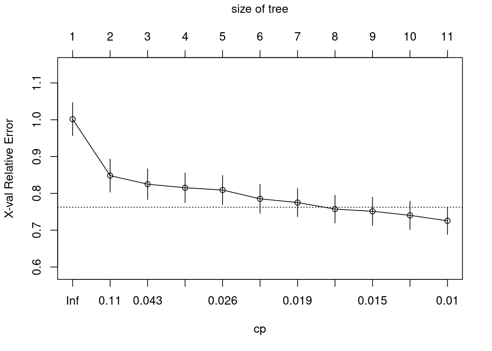
#Re-entrainement de l'arbre CART
arbre_cart<-rpart(quality~.,data=train,method="anova",cp=0.01)2.2 Divisions équireductrices et equidivisantes
L’entrainement de l’arbre CART sur notre échantillon d’apprentissage nous permet de prédire des nouvelles valeurs en se basant sur la connaissance de certaines valeurs de certaines variables.
Le premier noeud formé par l’entrainement de l’arbre CART est le noeud racine qui contient toutes les 1120 observations. Cette première division est basée sur la teneur en alcool des vins de notre échantillon d’apprentissage.
Ainsi, si la teneur en alcool est inférieure à 10.525, alors l’observation va à gauche. C’est la meilleure division car elle offre la plus grande amélioration. Il existe également d’autres variables qui lorsqu’elles sont divisées à un certain seuil, fournissent la meilleure amélioration (diminution) de l’erreur (ou de l’impureté). Ce sont les divisions équiréductrices(Primary splits) comme sulphates, volatile.acidity etc.
S’il manque des valeurs pour cette variable, l’arbre CART se basera sur d’autres variables comme des divisions équidivisantes (Surrogate splits) comme density, chlorides, etc., pour décider de la division et donc prédire un nouveau vin.
Pour prédire un nouveau vin pour lequel le taux d’alcool et la densité n’aurait pas été mesurée et serait donc manquants, l’arbre CART se basera donc sur la concentration en chlore pour effectuer la première coupure.
# Afficher le résumé de l'apprentissage de notre modèle
#summary(arbre_cart) ### Extrait de la sortie de summary(arbre_rpart) ###
Node number 1: 1120 observations, complexity param=0.1738621
mean=5.632143, MSE=0.6486097
left son=2 (684 obs) right son=3 (436 obs)
Primary splits:
alcohol < 10.525 to the left, improve=0.17386210, (0 missing)
sulphates < 0.645 to the left, improve=0.12939930, (0 missing)
volatile.acidity < 0.405 to the right, improve=0.12619650, (0 missing)
citric.acid < 0.295 to the left, improve=0.07021357, (0 missing)
density < 0.995565 to the right, improve=0.06232750, (0 missing)
Surrogate splits:
density < 0.995575 to the right, agree=0.763, adj=0.392, (0 split)
chlorides < 0.0685 to the right, agree=0.686, adj=0.193, (0 split)
volatile.acidity < 0.375 to the right, agree=0.666, adj=0.142, (0 split)
fixed.acidity < 6.75 to the right, agree=0.651, adj=0.103, (0 split)
sulphates < 0.705 to the left, agree=0.640, adj=0.076, (0 split)2.3 Visualisation du résultat
L’arbre CART nous permet de d’avoir la prédiction de la qualité du vin avec de nouvelle valeur. L’arbre démarre avec la valeur de 5.6, qui est la note moyenne de tous les vins et se lit assez intuitivement. Selon l’arbre, les variables les plus informatives sur la qualité du vin sont la concentration en alcool, en sulfates, l’acidité volatile ainsi que le pH.
Par exemple, si nous avons un nouveau vin avec les caractéristiques suivantes alcohol = 11.5, pH = 2, free.sulfur.dioxide = 7.6, sulphates =0.42, volatile.acidity = 0.98, nous aurions obtenu la note de \(4\).
rpart.plot(arbre_cart)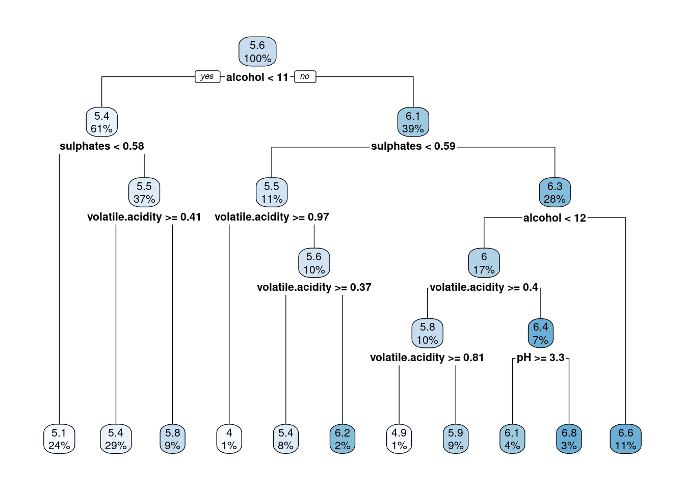
2.4 Erreur de généralisation et comparer les vraies valeurs aux prédictions
L’Erreur Quadratique Moyenne est la métrique de performance que nous utiliserons pour évaluer la qualité des modèles de régression. Elle mesure la moyenne des carrés des erreurs, c’est-à-dire la moyenne des carrés des différences entre les valeurs prédites et les valeurs réelles. Plus celle-ci est faible, plus le modèle est bien ajusté à nos données et donc plus précis.
#Erreur de prédictions
predictions_cart <- predict(arbre_cart, test)
mse <- mean((predictions_cart - test$quality )^2)
print(paste("Erreur de généralisation (RMSE) : ", sqrt(mse)))[1] "Erreur de généralisation (RMSE) : 0.678171784937612"data <- data.frame(TrueValues = test$quality, PredictedValues = predictions_cart)
ggplot(data, aes(x = TrueValues, y = PredictedValues)) +
geom_point() +
theme_minimal() +
labs(x = "vraies valeurs", y = "prédictions", title = "Predictions de la qualité du vin")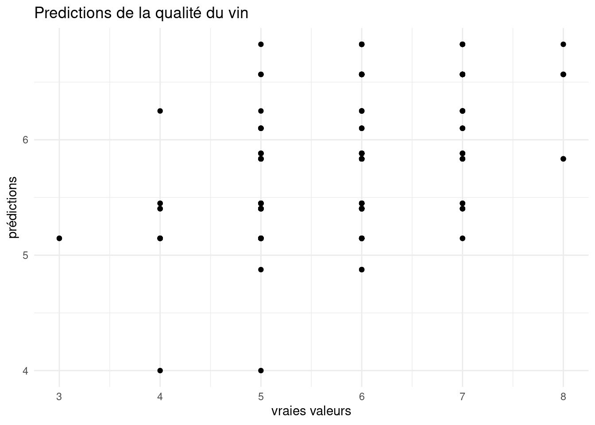
2.5 Robustesse
Les arbres CART, bien que puissants pour la modélisation et la visualisation, présentent une sensibilité notable à de petits changements dans les données. Cela peut se traduire par une grande variabilité dans la structure de l’arbre pour de légères modifications du jeu de données.
En observant les quatre arbres ci dessous, nous pouvons constater que chaque arbre diffère dans sa structure, ses nœuds de division et ses critères de division, malgré le fait qu’ils soient issus de jeux de données très similaires ou de sous-ensembles de données. Cette variabilité souligne le manque de robustesse des arbres CART.
num_trees <- 4 # Nombre d'arbres à générer
# Créez une liste pour stocker les arbres
arbres <- list()
# Générez et stockez les arbres dans la liste
for (i in 1:num_trees) {
index <- createDataPartition(wine_quality$quality, p = 0.5, list = FALSE)
training_sample <- wine_quality[index, ]
arbres[[i]] <- rpart(quality ~ ., data = training_sample)
}
par(mfrow=c(2, 2)) # Crée une grille pour afficher plusieurs arbres
# Affichez chaque arbre dans la grille
for (i in 1:num_trees) {
rpart.plot(arbres[[i]], main = paste("Arbre", i))
}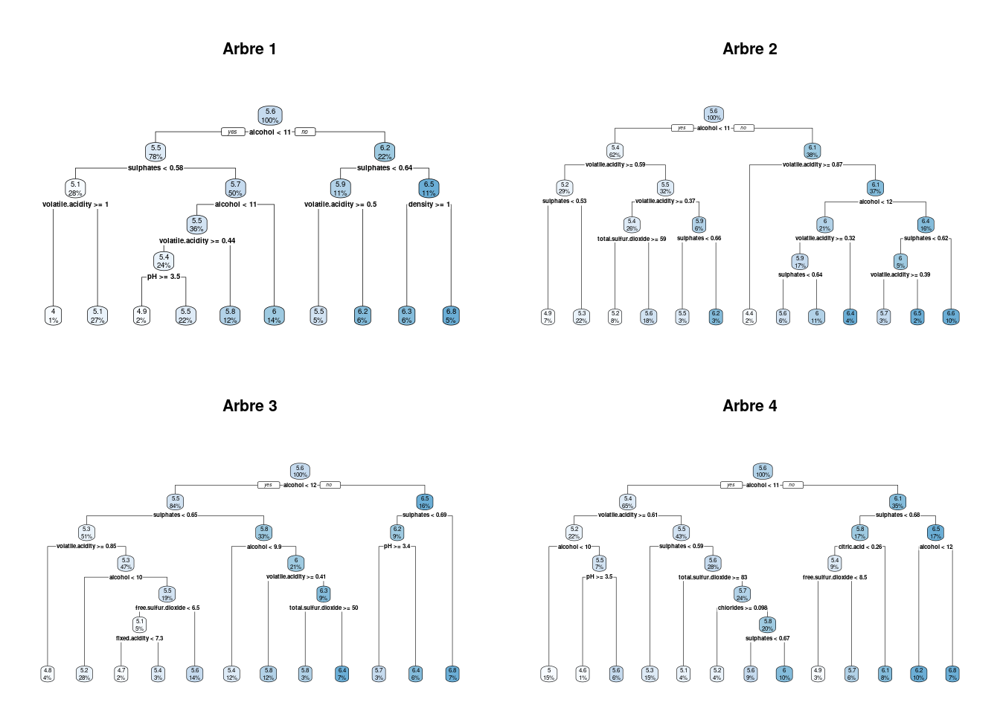
En pratique, pour obtenir des modèles plus robustes et moins sensibles aux variations, on utilise souvent les forêts aléatoires. Les forêts aléatoires, en combinant plusieurs arbres CART (où chaque arbre est formé à partir d’un sous-ensemble de données et d’un sous-ensemble de variables), permettent de “moyenner” les prédictions et d’atténuer les effets des instabilités individuelles des arbres.
3. Forêt aléatoire
3.1 Validation croisée
Le package ranger est utilisé pour entraîner des forêts aléatoires. Voici quelques hyperparamètres importants de ranger que vous pouvez ajuster :
- mtry: Nombre d’arbre à insérer dans la forêt aléatoire
- min.node.size: Taille minimale du nœud (critère de changement d’un noeud en feuille)
- splitrule: le critère de pureté (“gini”, “extratrees”, “variance” ,etc.).
modelLookup("ranger")Afin de les optimiser, nous allons réaliser une validation croisée.
# Configuration de la validation croisée
control <- trainControl(method = "cv", number = 5)
# Nouvelle grille d'hyperparamètres
grid <- expand.grid(
mtry = 1:10,
splitrule = c("variance", "extratrees"),
min.node.size =1:5
)
# modèle via validation croisée
foret_aleatoire <- train(
quality ~ .,
data = train,
method = "ranger",
trControl = control,
tuneGrid = grid
)
foret_aleatoire$bestTuneNous avons utilisé l’erreur quadratique moyenne (RMSE) pour choisir le meilleur modèle par validation croisée. Les hyperparamètres optimaux sont mtry = 6, splitrule = extratrees, et min.node.size = 2, ce qui assure un bon équilibre entre performance et risque de surajustement.
3.2 Re-entrainement du modèle
# Re-entrainement du modele avec valeurs optimales
foret_aleatoire_final <- ranger(quality ~ .,
data = train,
mtry = foret_aleatoire$bestTune$mtry,
splitrule = foret_aleatoire$bestTune$splitrule,
min.node.size = foret_aleatoire$bestTune$min.node.size,
importance = 'permutation')Selon notre modèle de forêt aléatoire, l’alcool est de loin la variable la plus influente pour prédire la qualité du vin, suivi de l’acidité volatile et du sulfate etc. Cela correspond plus ou moins aux variables que nous avons identifié dans l’analyse visuelle préliminaire 2.2 .
Les autres variables comme le chlorures et le sucre résiduel ont une moindre influence sur la qualité du vin. Ces résultats peuvent orienter nos prochains tests sur les facteurs clés affectant la qualité du vin.
# Visualisation de l'importance des variables
sort(foret_aleatoire_final$variable.importance, decreasing=T) alcohol volatile.acidity sulphates
0.29968914 0.13309690 0.11818299
total.sulfur.dioxide density citric.acid
0.06834531 0.06113796 0.05774871
fixed.acidity pH free.sulfur.dioxide
0.04428113 0.03737898 0.03737879
chlorides residual.sugar
0.03435503 0.02516916 3.3 Erreur de généralisation et erreur Out-Of-Bag
L’erreur OOB est une estimation de l’erreur de généralisation obtenue en utilisant chaque observation pour évaluer un modèle qui n’a pas été formé avec cette observation. C’est l’un des avantages des forêts aléatoires; elles fournissent une estimation interne de l’erreur de généralisation.
predictions_rf <- predict(foret_aleatoire_final, data = test)$predictions
mse <- mean((predictions_rf - test$quality)^2)
print(paste("Erreur de généralisation (MSE): ", mse))[1] "Erreur de généralisation (MSE): 0.336074897703549"print(paste("Erreur Out-Of-Bag (OOB): ", foret_aleatoire_final$prediction.error))[1] "Erreur Out-Of-Bag (OOB): 0.342473480056595"Nous constatons qu’il y a une faible différence entre l’erreur de généralisation et l’erreur Out-Of-Bag (environ \(0,01\)).
La proximité de ces deux erreurs suggère que notre modèle de forêt aléatoire est robuste et généralise bien aux nouvelles données, sans signe apparent de sur ajustement.
En bref, notre modèle semble performant et fiable pour la prédiction de la qualité du vin.
data <- data.frame(TrueValues = test$quality, PredictedValues = predictions_rf)
ggplot(data, aes(x = TrueValues, y = PredictedValues)) +
geom_point() +
theme_minimal() +
labs(x = "vraies valeurs", y = "prédictions", title = "Predictions de la qualité du vin")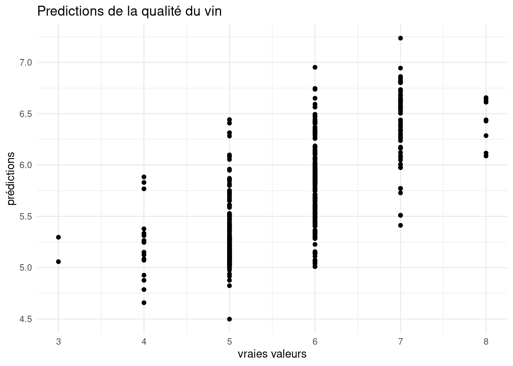
3.4 MDA importance (Mean decreasing accuracy)
L’idée principale de la MDA repose sur le fait que si une variable explicative n’est pas importante pour prédire la cible, qu’on la prenne en compte ou non dans la construction de la forêt ne devrait pas changer l’erreur de généralisation.
Elle se calcule de la manière suivante :
\[MDA(X_j) = \frac{1}{n_{\text{test}}} \sum_{i=1}^{n_{\text{test}}} l(y^*_i, \frac{1}{B} \sum_{b=1}^{B} g^{(-j)}_b(x^*_i)) - l(y^*_i, \frac{1}{B} \sum_{b=1}^{B} g_b(x^*_i)) \] où \(g^{-j}_b\) désigne la forêt aléatoire construite sans la j-ième variable explicative.
set.seed(123)
B <- foret_aleatoire_final$num.trees
n_test <- nrow(test)
original_preds <- predict(foret_aleatoire_final, data = test)$predictions
original_loss <- mean((original_preds - test[["quality"]])^2) # MSE
feature_names <- names(test)
feature_names <- feature_names[feature_names != "quality"]
MDA_values <- numeric(length(feature_names))
for(j in seq_along(feature_names)) {
temp_data <- train[, -j, with = FALSE]
temp_forest <- ranger(quality ~., data = temp_data, num.trees = B)
permuted_preds <- predict(temp_forest, data = test)$predictions
permuted_loss <- mean((permuted_preds - test$quality)^2) # MSE après suppression de variable j
MDA_values[feature_names[j]] <- (permuted_loss - original_loss)
}
sort(MDA_values[MDA_values != 0],decreasing = T) sulphates alcohol volatile.acidity
0.0366279588 0.0264460487 0.0144637845
total.sulfur.dioxide density fixed.acidity
0.0075565892 0.0073128653 0.0051167717
pH chlorides residual.sugar
0.0050919154 0.0034444456 0.0034389022
citric.acid free.sulfur.dioxide
0.0021225963 0.0009107246 La sortie MDA montre l’importance des variables dans un modèle de forêt aléatoire. Les “sulphates” et “alcohol” ont les valeurs MDA les plus élevées, ce qui signifie qu’ils sont les plus importants pour la précision du modèle. Les variables comme “total.sulfur.dioxide” et “density” ont une importance moindre mais intéressante à savoir.
A l’inverse, des variables comme “fixed.acidity” et “citric.acid” etc. ont des valeurs MDA négatives, cela signifirait que les supprimer du modèle ferait baisser notre erreur de généralisation ce qui pourrait indiquer qu’elles ne sont pas très utiles dans ce modèle.
sort(foret_aleatoire_final$variable.importance,decreasing = T) alcohol volatile.acidity sulphates
0.29968914 0.13309690 0.11818299
total.sulfur.dioxide density citric.acid
0.06834531 0.06113796 0.05774871
fixed.acidity pH free.sulfur.dioxide
0.04428113 0.03737898 0.03737879
chlorides residual.sugar
0.03435503 0.02516916 Dans la sortie d’importance de notre modèle constitué de toutes les variables explicatives, “Alcohol” prend la première place, suivi de “sulphates” et “volatile.acidity”.
Dans les deux cas, “alcohol”, “sulphates”, et “volatile.acidity” se démarquent comme les variables les plus influentes, mais leur ordre d’importance change. “Alcohol” est devenu plus dominant dans la sortie donné directement par le modèle.
Bonus : Projection UMAP
from umap import UMAP
import pandas as pd
import matplotlib.pyplot as plt
from sklearn.preprocessing import StandardScaler
from sklearn.metrics import silhouette_score1. Validation croisée des paramètres UMAP
UMAP, acronyme de “Uniform Manifold Approximation and Projection”, est une méthode avancée de réduction de dimensionnalité.
Dans le cadre de notre étude utilisant un modèle de forêt aléatoire, cette technique nous permettra de simplifier la complexité de nos variables explicatives multidimensionnelles. Plus précisément, nous allons projeter ces variables sur deux axes seulement, facilitant ainsi leur visualisation et leur interprétation.
Etant utilisé très souvent en apprentissage supervisé, nous allons faire une validation croisée afin de selectionner les meilleurs hyper paramètres de cette méthode.
df_train = pd.DataFrame(r.train)
# Séparer la variable d'intérêt et les features
X = df_train.drop(['quality'], axis=1)
y = df_train['quality']
# Normaliser les données
scaler = StandardScaler()
X_normalized = scaler.fit_transform(X)
#Grid de paramètres à tester
n_neighbors = [5, 10, 15, 20, 25]
min_dist = [0.1, 0.5, 1]
# Entraîner UMAP pour toutes les combinaisons de paramètres
best_score = -1
best_params = {}
for k in n_neighbors:
for d in min_dist:
umap = UMAP(n_neighbors=k, min_dist=d)
projection = umap.fit_transform(X_normalized, y=y)
# Calculer le score silhouette
score = silhouette_score(projection, y)
if score > best_score:
best_score = score
best_params = {"n_neighbors": k, "min_dist": d}
print("Meilleurs paramètres:", best_params)Meilleurs paramètres: {'n_neighbors': 25, 'min_dist': 0.1}print("Score silhouette:", best_score)Score silhouette: 0.48484257Dans UMAP, les axes n’ont pas de signification intrinsèque claire, car la méthode vise à préserver la structure locale des données plutôt qu’à expliquer la variance.
Toutefois, UMAP préserve les relations locales entre les points. Ainsi, la proximité entre les points dans la projection UMAP peut être interprétée comme une similarité dans l’espace de données d’origine.
Dans la projection de nos variables explicatives labellisées avec notre variables cible, nous constatons que les vins ayant eu une mauvaise note de qualité semble avoir des caractéristiques similaires qui diffèrent des vins ayant un bon qualité.
# Re entraîner le meilleur modèle
umap_model = UMAP(n_neighbors=best_params['n_neighbors'], min_dist=best_params['min_dist'], n_components=2, target_metric='l1')
embedding = umap_model.fit_transform(X_normalized, y=y)
# Visualisation
plt.scatter(embedding[:, 0], embedding[:, 1], c=y, cmap='viridis')
plt.colorbar(label='Quality')<matplotlib.colorbar.Colorbar object at 0x7fcc5994cfa0>plt.title('Projection UMAP ')
plt.xlabel('UMAP 1')
plt.ylabel('UMAP 2')
plt.show()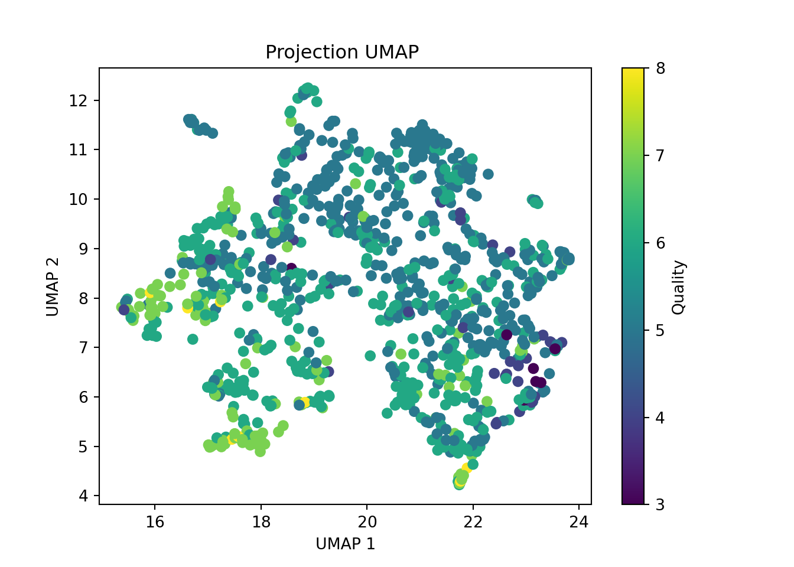
2. Projection inverse et denormalisation
import numpy as np
# Déterminer les limites de l'espace projeté
x_min, x_max = embedding[:, 0].min() - 1, embedding[:, 0].max() + 1
y_min, y_max = embedding[:, 1].min() - 1, embedding[:, 1].max() + 1
# Créer une grille 100x100
xx, yy = np.meshgrid(np.linspace(x_min, x_max, 100),
np.linspace(y_min, y_max, 100))
# Aplatir la grille pour l'inverse de la transformation
grid = np.c_[xx.ravel(), yy.ravel()]
# Calculer la projection inverse
inverse_proj = umap_model.inverse_transform(grid)
# Dé-normaliser les valeurs
inverse_proj_denorm = scaler.inverse_transform(inverse_proj)3. Prédictions de la forêt aléatoire pour ces points
inverse_proj_denorm <- as.data.frame(py$inverse_proj_denorm)
colnames(inverse_proj_denorm)<-colnames(train[,-12])
predictions_umap_denorm<- predict(foret_aleatoire_final, data = inverse_proj_denorm)$predictions# Transformer les prédictions en une matrice 100x100
predictions = np.array(r.predictions_umap_denorm).reshape(100, 100)
# Visualiser les prédictions dans l'espace UMAP
plt.scatter(inverse_proj_denorm[:, 0], inverse_proj_denorm[:, 1], c=predictions.ravel(), cmap='viridis')
plt.colorbar(label='Valeur de Prédiction')<matplotlib.colorbar.Colorbar object at 0x7fcc5a1576a0>plt.title('Prédictions de la Forêt Aléatoire dans l\'Espace UMAP 2D')
plt.xlabel('UMAP 1')
plt.ylabel('UMAP 2')
plt.show()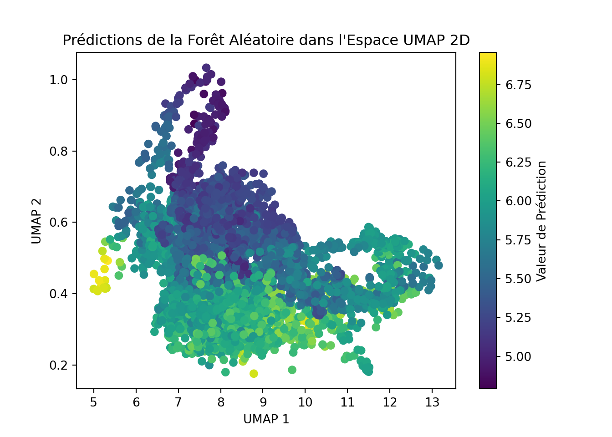